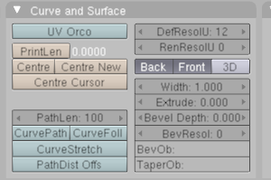

Oyé, oyé tout le monde ! Qui n'a jamais voulu faire lui-même ses propres logos en 3D. :p De plus, c'est facile et pratique avec Blender. Dans ce tuto, je vous guiderai dans la réalisation d'un logo 3D simple puis après un peu d'entrainement vous pourrez faire ce que vous voulez ! ^^
Allons donc, ne tardons pas et commençons... :pirate:
Je suppose que vous avez déjà lancé Blender et que vous êtes en présence des trois objets initiaux : le cube, la lampe et la camera. On n'aura pas besoin du cube ;) , donc supprimer le (sélectionnez le cube >> appuyez sur "x" >> validez). Nous travaillerons en vue du dessus donc, si ce n'est déjà le cas, appuyez sur 7 (sur le pavé numérique).
Pour ce tuto, j'ai tracé un logo simple mais qui vous fait quand même travailler des courbures et des lignes droites. Enregistrez donc l'image ci-dessous pour suivre le tutoriel :
Maintenant que vous avez votre logo en 2D, vous allez l'insérer dans le grillage Blender pour s'en servir de plan "directeur" au contour de votre futur logo en 3D.
Pour cela, cliquez sur view >> Background Image...
Une petite boîte apparaît dans laquelle il faut cocher Use Background Image. Vous aurez ensuite :
Cochez Load et choisissez le fichier image que vous voulez charger. Explication des paramètres réglables :
Blend : définit la transparence de l'image dans la fenêtre. N'augmentez pas trop ce paramètre parce que vous risquez de ne plus pouvoir distinguer la souris.
Size : définit la taille de l'image dans la fenêtre.
X Offset et Y Offset : définit la position du centre de l'image sur l'axe (X,Y).
Vous devez maintenant avoir devant vos yeux ceci :
Voilà, votre scène est prête et nous pouvons commencer à réellement modéliser notre logo en 3D. Allons-y :pirate: !
Nous allons maintenant "dessiner" le contour de notre logo afin de créer un objet : ici, en l'occurrence notre logo :lol: . Pour ce faire, nous utiliserons des courbes => Blender nous en propose deux types : Bézier et NURBS. Pour ma part je préfère utiliser les courbes Bézier. Au départ les courbes Bézier sont des figures utilisées pour concevoir des pièces d'automobile, aujourd'hui beaucoup de domaines, comme la 3D :) , les mathématiques,... s'en servent. Pour ceux qui voudrait en savoir plus, jettez un coup d'oeil ici : Wikipédia : Courbe de Bézier.
Qu'allons-nous faire avec ces courbes Bézier ?
On va tout simplement suivre les contours de notre logo à l'aide des courbes :
Une courbe de Bézier est donc constituée de deux "droites" et d'un "filament". En éditant les deux "droites", on pourra modifier la longueur, la courbure,... du filament. On appelle point de contrôle le point au milieu d'une "droite" et poignées les deux points de chaque côté. Alors, comme rien ne vaut la pratique, bidouillez avec la courbe pour apprendre à s'en servir ;) .
Comme l'a dit quelqu'un (je sais plus qui :-° ), une image vaut mille mots, alors regardez mes images et essayez de faire de même :
Vous devez maintenant manier les points de contrôle et les poignées de cette courbe, tel que la courbe puisse décrire le contour du logo :
Notre courbe ne me plaît pas, et vous ? Elle n'est pas lisse et toute ronde. Donc nous allons ajouter un troisième point de contrôle entre les deux premiers afin d'améliorer la courbe. Pour ce faire, sélectionnez les deux points de contrôle et faites w >> Subdivide. Maintenant réglez la longueur, la direction,... de ce nouveau point de contrôle et des poignées afin d'obtenir une belle courbe. Pour ajouter un point de contrôle à la suite d'un autre point de contrôle, sélectionnez le point de contrôle de départ et faîtes Ctrl + CliqueGauche là où vous voulait ajouter le nouveau point de contrôle.
Continuez à faire cela afin d'obtenir :
Jusque là nous avons seulement décrit les contours en courbe. Essayez de faire la même chose pour la flèche rouge du logo... Vous me direz que ce n'est pas très pratique d'utiliser les courbes Bézier dans ce cas :euh: ... Que nenni ! ^^ On peut aussi utiliser les courbes Bézier afin d'obtenir des formes "carrées". Pour cela, choisissez un point de contrôle et appuyez sur v. Votre "droite de contrôle" devient alors verte. Vous êtes passé en type "vector". Maintenant vous pouvez réaliser des formes "carrées".
Pour fermer une courbe, sélectionner les deux points de contrôle à joindre et faites c. C'est le même principe qu'une sélection dans un logiciel comme Photoshop ou encore The Gimp. Je vais maintenant vous montrer ce que vous devez avoir comme figure :
Je suis en mode Solid.
Voilà, nous avons maintenant ce qu'il nous faut pour réaliser un logo en 3D (une simple extrusion fera l'affaire ;) ).
Il ne reste plus qu'à faire une extrusion et notre logo prend forme :D .
Pour ce faire, nous allons éditer nos courbes dans la fenêtre des boutons. Entrez en mode Editing (F9) et regardez les paramètres réglables dans Curve and Surface.

Width : définit la taille.
Extrude : définit l'ampleur de l'extrusion.
Bevel Depth : définit le niveau de biseautage.
BevResol : définit la précision des contours.
Manipulez ces paramètres à votre gré afin d'obtenir quelque chose comme ceci :
Libre à vous de colorier ou de texturer votre logo ;) .
Avec quelques textures et une mise en scène on peut obtenir ceci :
Voilà, le tuto se termine ici. J'espére que cela vous a appris quelques techniques, notamment les courbes de Bézier. Si vous rencontrez des difficultés à manipuler ces courbes, cherchez des tutos sur Internet. Le meilleur moyen de s'ameliorer est de pratiquer ! :D
Vous n'avez plus qu'à apprendre à faire de l'animation et vous pourrez vous aussi créer des pubs pour TF1 :-° Si si, rappellez-vous, les trois lettres P U B qui bougent partout...
{kind=link}
{kind=link}